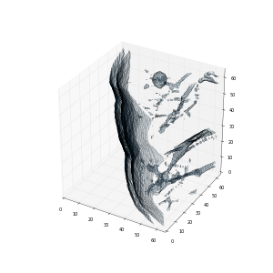
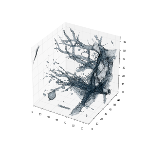
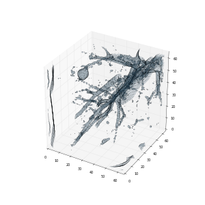
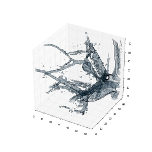

Problem Definition
Current problem: The problem is by using a data set of thousands of high-resolution lung CT scans provided by National Cancer Institute to develop algorithms that accurately determine the nodules positions in the lungs which might be determined as cancerous.
Assumption: Participants are allowed to use related external dataset to train model, so we assume that LUNA16 datasets can be well applied to train our models which includes labels of patients that identifies nodule locations in 3D space. And the data science bowl dataset on the other hand comes with binary labels cannot suit for training such a model individually. And moreover, we assume CT scan with high resolution can be applied to separate or segment non-lung tissue, and we notify that it might fail in about 10% of entire cases.
Difficulties:
1. Segmentation algorithm to split non-lung tissue from lung tissue.
2. The chunks of datasets for train model are rather gigantic, so we need to think about how to compute in parallel to reduce computation time.
3. The patients in the dataset may have different number of slices, and the distance between each slice, i.e. thickness of slice, may be different, so it is difficult to deal with this part.
4. Classifier selection to train model through LUNA2016 datasets.
5. Preprocessing steps to working with raw datasets both from LUNA2016 and Data Science Bowl 2017.
Method and Implementation
Preprocessing Steps
Basic steps of preprocessing: 1. Loading the DICOM files using package dicom 2. Converting the pixel values and find out which tissue those unit values shall belong to. 3. Isomorphic resolution is re-sampled to remove the variance in scanner resolution. 4. 3D plotting and segment of non-lung tissue.
After reading the CT Scan, the first step in preprocessing is the segmentation of lung structures because it is obvious that the regions of interests lies inside the lungs. One scan can probably contain multiple slices, which we may save as an array list. And every folder in the dataset is one scan corresponds to one specific patient. We segment lung structures from each slice of the CT Scan image and try not to loose the possible region of interests attached to the lung wall. There are some nodules which may be attached to the lung wall.
Secondly, after segmenting the lung structures from the CT Scanned images, our task is to find the candidate regions with nodules since the search space is very large. Also, whole image can't be classified directly using 3D CNNs due to limit on computation, we need to find possible regions of cancer and then classify them. Then every pixel can be re-sampled that we can use 3D ConvNets while no need to worry about thickness invariance.
In the end, 3D plotting for the scan in order to visualize the preprocessing result. Through marching cubes to create an approximate mesh for out 3D object, and plot this with matplotlib. Here's a visualization of the lung segment and the eight chunks extracted from one patient in the training set (it is quite easy to spot the nodule).




Functions
process_annotations(uid, annots, origin, labels, shape, starts): It is mainly used for training LUNA2016 data set with the location and diameter of nodules.
filter_cands(locs) It is used for filtering nodule candidates, we just don't take negative candidates from a sample with malignancy.
read_scan(path): Read CT scans from given paths
get_data(scan_data): Convert to (z, y, x) ordering
convert(path_list, annots, batch_size, max_idx, idx): Save to metadata file for future model
get_mask(image, uid): Get the lung mask of the patient
Convolution Neural Network
Conventional Neural Networks are very similar to ordinary Neural Networks from the previous chapter: they are made up of neurons that have learn-able weights and biases. Each neuron receives some inputs, performs a dot product and optionally follows it with a non-linearity. The whole network still expresses a single differentiable score function: from the raw image pixels on one end to class scores at the other. And they still have a loss function (e.g. SVM/Softmax) on the last (fully-connected) layer and all the tips/tricks we developed for learning regular Neural Networks still apply. The following figure is the general construction of the convolution neural network.

In convolution neural network, normally, there are 3 main layer types: Convolution layer, Pooling Layer and Fully-connected Layer. F or the Convolution layer, it will compute the output of neurons that are connected to local regions in the input, each computing a dot product between their weights and a small region they are connected to in the input volume. This may result in volume such as [32x32x12] if we decided to use 12 filters. For Pooling layer, it will will apply an element-wise activation function, such as the max(0,x)
thresholding at zero. This leaves the size of the volume unchanged. For pool layer, it will perform a down-sampling operation along the spatial dimensions (width, height), resulting in volume such as [16x16x12].
In this project, we use neon to build our own convolution neural network layer and initialize the model. Neon is an open source Python-based language and set of libraries for developing deep learning models.
First, we need use set some hyperparameter to the ConNet, such as the value of padding, strides and dilation. In this project, we set the value of padding to 1, because it will be convenient to pad the input volume with zeros around the border. Then we set the strides to 2. The value of stride decides how many pixel we move the filter at a time. In this project the value of the dilation is 2, which decides the gap between each cell.
Secondly, we construct the convolution neural network layers by the function in the neon package. In the package, Conv, Pooling and Affine can help us build these 3 kind layers. Conv can help us build convolution layer, and Pooling can help us build pooling layer, and Affine can help us build the output layer. These function can automatically set initial value to this layer. The model is actually a combination of different matrix. What we need to do next is training this model.
Finally, we need train the model using the data we processed. The 2017 dataset has no information about the position of the real nodules. In order to train the model to find the real nodules in lung, we need the data of the position of the real nodules. Thus, we decide to use the dataset of 2016, which has the information of the position of the nodules of each patient. Thus, we can use the processed dataset of 2016 to train our model. In neon, there is a function can do the training job, which is called fit. By calling this function, we trained our model.
Functions
create_network(): Create and initializes the convolution network.
model.fit(train, optimizer=opt, num_epochs=args.epochs, cost=cost, callbacks=callbacks) Training the model.
model.get_outputs(dataset): Get the output of the prediction.
Files and Description
| File | Description |
|---|---|
| convert.py | code for converting DICOM images |
| index.py | code to generate index files for training and validation |
| data.py | specialized dataloader (and augmenter) that extracts chunks |
| run.py | model to train classifier on chunks |
| video.py | utility functions for video related operations |
| mask.py | utility functions for segmenting |
| settings.py | common settings |
Results
First, after we processed the LUNA2016 dataset and data science bowl's dataset, we use the location, diameter and label of candidate nodules to train our model. Also, during training, to minimize overfitting further, some amount of jitter is applied to the coordinates. We implement 6 epochs to fit model on the training dataset and performs validation. Figure 4 is the image when we fitting our model during epoch 1.
Figure 5 is the relationship of epoch and train cost of our model. After we get our model, we test it with validation data and get the test log loss around 0.4.

Finally, we feed chunks from locations information derived from preprocessing to the trained model in order to get predictions. And we get two files: train-pred.npy and val-pred.npy. Here is a sample of what do these files contain. The evaluation is done by picking 128 mostly random chunks out of each sample in the validation set, so every patient has 128 probabilities for negative results and 128 probabilities for positive results. In the end, we would calculate the mean of the probability of this patient having lung cancer.

Discussion
Strength: This algorithm implements the dataset from LUNA2016 which has much more useful information of nodules than data science bowl dataset. We get the result of the probability of the patient having cancer instead of binary labels 0 and 1.
Weakness: Although our model has low train loss on LUNA2016 dataset and performs well, this model is not fit very well of data science bowl dataset than we expected. The algorithm we used for the preprocessing part is relatively simplistic and in fact fails in about 10% of the cases.
Potential future work: From each sample in the data science bowl dataset, extract overlapping chunks and feed them to the trained model to get a 3D heatmap of nodule probabilities over the entire sample. Use heatmaps generated from the DSB training set along with the corresponding binary labels to train a second model. Once trained, use this model to generate predictions on the test dataset. Training the second model based on data science bowl dataset may improve the accuracy.
Credits and Bibliography